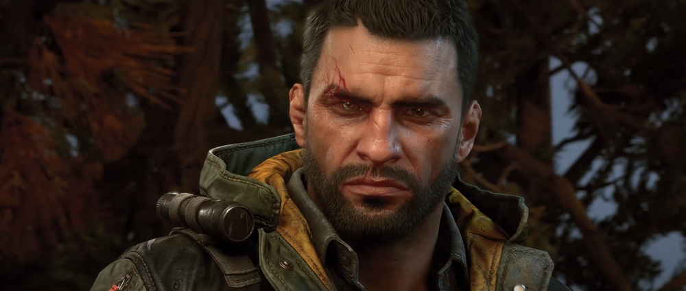
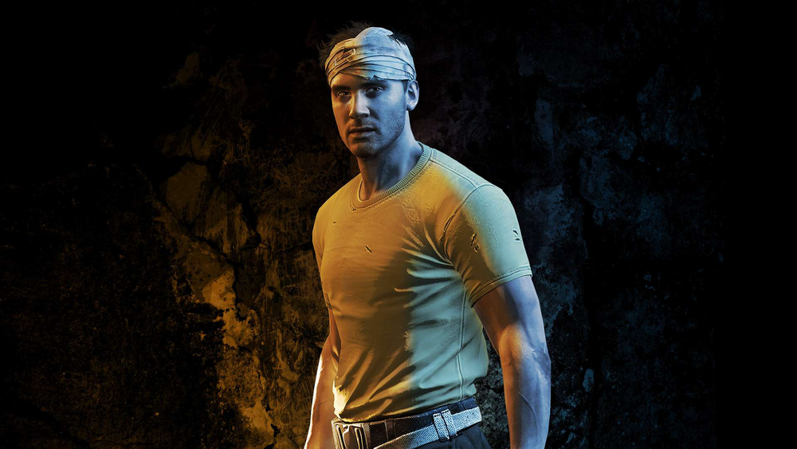
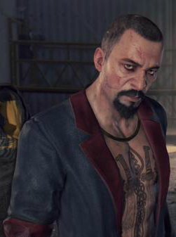
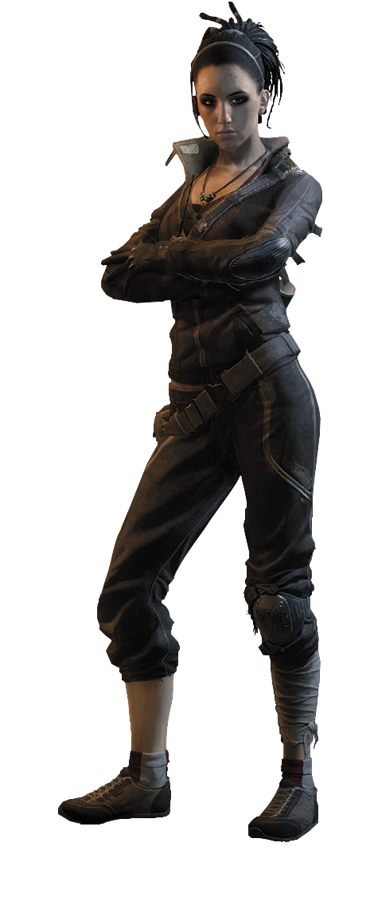
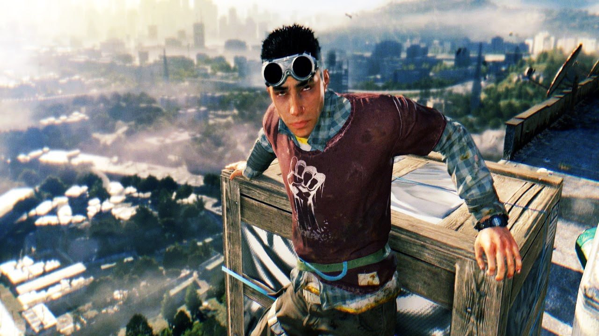

Геймплей
Сюжет
Сюжет игры рассказывает об агенте под прикрытием по имени Кайл Крейн, которого отправляют проникнуть в карантинную зону в ближевосточном городе под названием харран (разумеется город вымышленный) В игре представлен кишащий врагами открытый мир - город с динамическим циклом смены дня и ночи, в котором зомби медленны и неуклюжи днём, но ночью становятся крайне агрессивными.
Геймплей ориенторован на бой с применением оружия и паркур, что позволяет игрокам при столкновении с угрозой либо бить, либо бежать. В игре также есть асимметричный многопользовательский режим (изначально планировавшийся как бонус за предзаказ игры) и кооперативный многопользовательский режим. до четырх игроков.
Главные герои
Кайл Крейн
Главый герой - Кайл Крейн, оперативник ВГМ под прикрытием, попадает в харран с миссией забрать секретный файл у главаря одной из фракций. Он оказывается посреди самой настоящей войны, где с одной стороны - банда головорезов во главе с Кайдыром Сулейманом(Раис), а с другой - группа паркурщиков под предводительством Брекена, которые пытаются выжить. Крейн принимает решение помогать Башне - пристанищу для людей, оставшихся без крыши над головой. Крейн не раскрывает своей миссии обителям Башни, однако многи отмечают, что он обладает как отличной боевой подготовкой, так и навыками выживания. Это становится очевидно в одной из заставок, в миссии "Яма"; это также признаёт сам Раис в одном из диалогов; и, наконец, это видной в финальной миссии.
Физически Крейн прекрасно подготовлен, хотя и полагается больше на стратегию, менёвренность и свои навыки выживания, нежели на грубую силу(которая присуща для игр про зомби). Он не ищет известности, но готов принять вызов как от случайного бегуна, так и от бегуна Раиса(Кайдыром Сулейманом).
Крейну не чужды юмор и сарказм, иногда он отпускает шуточные замечания, а в критических ситуациях - выражает типичные эмоциональные реакции(горечь, страх, разочарование), впрочем, способен и "надавить" на оппонента. О хорошем образовании Крейна можно судить по тому, что в одном из диалогов с Каримом он узнаёт цитату из Макиавелли("Если невозможно, чтобы тебя любили и боялись одновременно, то лучше, чтобы тебя боялись"). По некоторым его репликам также заметно, что перед забросом в Харран он изучал всю возможную информацию о городе и обстановке в нём, за исключением разве что реального боевого опыта.
Харрис Брекен
До аппокалипсиса Харрис был профессиональным тренером по паркуру и приехал в Харран на заработки, не имея при этом ничего за душой, кроме визитных карточек в кармане. А когда произошла вспышка эпидемии по словам Рахима, Харрис смог объединить выживших и сделать Башню их основной базой. К сожалению, во время одного из походов за очередным грузом Брекен потерял своих людей, а сам пострадал от рук бандитов. «Отважный и готовый пойти на всё ради своих людей» - так можно описать Харриса Брекена во время первой встречи с ним. В Башне он придстаёт перед Крейном не в самом лучшем состоянии. Как и любой лидер, Харрис пытается взвалить на свои плечи новое дело, но его состояние плачевно, и он доверяет самое важное нашему главному персонажу.
По мере прохождения Крейн узнаёт, что потеря отряда сильно сказалась на его лидерских качествах. Харрис впадает в панику, злится и считает, что не является истинным лидером, ссылаясь на то, что он всего лищь простой инструктор по паркуру.
Раис (Кадыр Сулейман)
Раис - главарь бандитской группировки, главный антагонист и финальный босс игры. Бывший полковник армии, политик. Местное правительство временно назначило Кадыра губернатором Харрана. Он был ответственен за правопорядок и защиту города от вспышки вируса. Вскоре Сулейман обращается к ВГМ с просьбой эвакуировать его парализованного младшего брата Хассана. По данным ВГМ, министерство обороны отказало в эвакуации, из-за чего Хассана постигла печальная судьба.
Разочарованный Кадыр пересматривает свои взгляды и решает взять на себя роль могущественного военачальника Раиса, формируя жестокую группировку людей, впоследствии ответственную за многочисленные грабежи, зверства и убийства по всему городу. Многие солдаты действующей армии дезертировали и присоединились к банде.
У Раиса есть правая рука Тахир, который удерживает головорезов в узде и следит за выполнение приказов. Его «дворецкий» Карим поддерживает радиосвязь с группами бандитов в городе: он направляет их к недавно преземлившимся наборам помоши при ЧС, которые собирает Раис в попытке воздействовать на других выживших. Он и его люди базируются в многоквартирном дома в трущобах, известном как Гарнизон. В начали аппокалипсиса Сулейман также отвечал на защиту докторов Аллена Камдена и Имрана Зере, исследовавших получение потенциальной ванцины.
Потеряв родного брата, разъерённый Кадыр обвинил в случившемся ВГМ и выкрал важный файл, содержавший компрометирующую ВГМ информацию об использовании вируса в своих интересах. Используя данный файл в качестве предмета шантажа, Раис угрожал ВГМ разоблачить их в случае, если с ним что-то случится, предварительно отправив его надёжному человеку.
Из-за тяжёлого положения с антизином в Башне её жители вынуждены просить Раиса о продаже антизина. В качестве посла к нему пошёл Кайл Крейн. Раис предлагает Крейну сделку: два ящика антизина за активацию двух вышек связи и сбор дани с местных поселений. Однако по выполнении поручений Раис отдаёт лишь пять ампул антизина, требуя от Крейна за остальную часть лекарства доставить к нему лучшего бойца Башни по прозвищу Скорпион для участия в боях на арене.
Несогласный с требованием Раиса, Крейн вынужден предпринять ограбление его склада в бывшем здании школы. В ответ на это Раис уничтожает исследовательский лагерь доктора Зере, а самого доктора похищает, чтобы заманить в ловушку Крейна, который обязательно придёт его спасать. Его план сработал: Крейн был схвачен.
Раис решает позабавиться, выставив Крейна на своей гладиаторской арене против заражённых. Недовольный тем, что Крейн выстоял на арене, убив всех заражённых, Раис спускается к Кайлу, попутно рассказывая, что он знает, что Крейн — агент ВГМ. После этого он рассказывает о истинном содержании файла, который в ту же секунду публикует в интернете доверенное лицо Раиса и приказывает своим людям убить Крейна. Но у героя в этот момент начался приступ агрессии из-за воздействия вируса, в результате чего он убивает охрану Раиса, а самому Раису отрубает правую руку. Взбешённый, Раис приказывает любой ценой убить Крейна и посылает своих людей в Старый город в погоню за Крейном.
Джейд Альдемир
Персонаж, играющий немаловажную роль в игре Dying Light. Считается лучшим бойцом в отряде паркурщиков Башни и носит прозвище «Скорпион». Джейд родилась слабой и недоношенной, однако упорство и тренировки исправили этот недостаток. В результате она стала одним из выдающихся кикбоксеров, которые должны были принимать участие в играх в Харране, которые были прерваны начавшейся эпидемией. В начале эпидемии вместе со своим братом примкнула к группе, возглавляемой Брекеном. Является одним из разведчиков Башни.
Во время одного из рейдов за припасами Джейд вместе со своим напарником Амиром ценой жизни последнего спасла Кайла Крейна от толпы заражённых. В дальнейшем совместно с главным героем участвует в поиске антизина на складе Раиса в Старой школе, похищая оттуда взрывчатку. Узнав, что её брат Рахим, пытаясь взорвать логово прыгунов, погиб, Джейд уходит из Башни в Старый город, чтобы передать доктору Камдену результаты исследований доктора Зере.
На протяжении игры Джейд проявляет заботу о своих людях и, в случае опасности, просит не лезть в передрягу и уходить. После смерти своего брата она перестаёт доверять главному герою, игнорируя его по рации или сообщая о том, что с неё достаточно. Однако, в конце концов, она жертвует собой, спасая его.
Рахим Альдемир
Второстепенный персонаж в игре Dying Light. Молод, готов пойти на всё, чтобы добиться своей цели. Рахим родился в Харране, Турция. После вспышки Рахим стал инструктором по паркуру в Башне, соорудив собственный учебный полигон в здании, куда можно добраться по строительному крану. У него есть старшая сестра — Джейд. Впервые Крейн встречает Рахима на крыше Башни, где он просит героя продемонстрировать свои способности в паркуре. Подойдя к внутреннему краю крыши, Рахим просит героя прыгнуть вниз и, услышав отказ и испуг в его голосе, с весёлым криком делает это сам и падает на мусорные пакеты. После успешного испытания Рахим удивляется сноровке Крейна, подозревая, что тот уже был обучен подобным навыкам.
Как заканчивается жизнь Рахима. Рахим рассказывает о своём плане подорвать гнездо в одной из многоэтажек, и его план становится осуществимым, когда Крейн и Джейд находят взрывчатку в школе. К сожалению, не послушав Крейна и отправившись с парой людей ночью к логову, он оказывается укушенным. Вместе с взрывчаткой Рахим успевает спрятаться в вагоне в депо, однако, понимая, что он скоро обратится, активирует взрывчатку, а в это время Крейн успевает убить всех заражённых, окруживших вагон с Рахимом. Тот отдаёт взрывчатку Крейну, и Кайл успевает доставить её в гнездо прыгунов и вернуться обратно, однако к моменту взрыва Рахим успевает обратиться и нападает на Крейна. Тот, пытаясь защититься, сворачивает обращённому Рахиму шею. Это приводит Крейна в несказанное чувство вины перед собой и Джейд за то, что он не смог спасти мальчишку.
